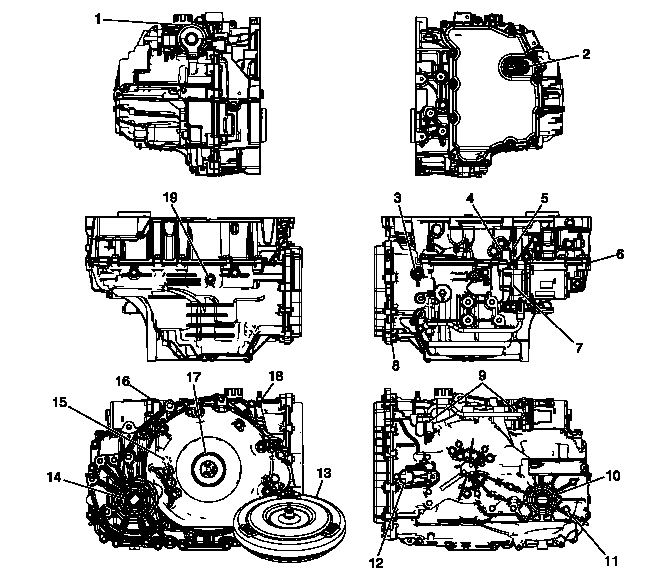

油液泄漏的诊断
一般方法
1.
确认变速器油泄漏。
告诫：
切勿使用制动器清洗剂或其他反应性溶剂清洁，因为这些溶剂可损坏橡胶衬垫、密封件和衬套。
2.
用抹布彻底清洁可疑泄漏部位。
注意:
请勿使车辆怠速行驶，这样不会启动变速器系统。也不要在高速公路上行驶，这会使机油溅出，影响泄漏诊断。
3.
在城市道路状况下驾驶车辆行驶15-20分钟，直到达到正常工作温度。
4.
将车辆停放在干净的纸或纸板上。
5.
关闭发动机。
6.
在纸上查找油滴。
7.
进行必要的维修。
粉末法
告诫：
切勿使用制动器清洗剂或其他反应性溶剂清洁，因为这些溶剂可损坏橡胶衬垫、密封件和衬套。
1.
用抹布彻底清洁可疑泄漏部位。
2.
在可疑泄漏部位涂雾化泄漏追踪粉。
注意:
请勿使车辆怠速行驶，这样不会启动变速器系统。也不要在高速公路上行驶，这会使机油溅出，影响泄漏诊断。
3.
在城市道路状况下驾驶车辆行驶15—20分钟，直到达到正常工作温度。
4.
关闭发动机。
5.
检查可疑的泄漏部位。
6.
通过粉末沿着泄漏轨迹查找泄漏源。
7.
进行必要的维修。
染料和不可见光法
液体染料和不可见光测试组件可从不同的工具制造商处购得。
1.
根据制造商的说明确定染料的用量。
2.
车辆行驶24公里（15英里），或一直行驶至达到正常工作温度。
3.
用不可见光法检查泄漏。
4.
进行必要的维修。
寻找泄漏原因
查明泄漏部位，并沿泄漏轨迹跟踪泄漏源。必须确定泄漏原因，以便进行正确修理。例如，如果仅更换衬垫，而密封法兰已弯曲，新换衬垫将不能修复泄漏。还必须修理弯曲的法兰。在修理泄漏前，检查是否存在以下情况，并进行必要的维修：
衬垫
•
油位/油压过高
•
通风孔或回流孔堵塞
•
紧固件紧固不当
•
螺纹脏污或损坏
•
法兰或密封面翘曲
•
密封面划伤、起毛刺或有其他损坏
•
衬垫损坏或磨损
•
部件上有裂纹或孔隙
•
在可应用处使用了不正确的密封胶
•
衬垫不正确
密封件
•
油位/油压过高
•
通风孔或回流孔堵塞
•
密封孔损坏
•
密封件损坏或磨损
•
安装不正确
•
部件出现裂纹
•
手动换档轴或输出轴表面有划伤、刻痕或损坏
•
轴承松动或磨损而导致密封件过度磨损
可能的油液泄漏点
变速器阀体盖
•
螺栓紧固不当
•
衬垫/密封件安装不当或损坏
•
安装面损坏
•
衬垫密封件不正确
壳体泄漏
•
输入轴转速传感器密封件损坏
•
手动轴密封件损坏
•
油冷却器管路/密封件松动或损坏
•
半轴油封磨损或损坏
•
管路压力管塞或油位管塞松动
•
铸件上有孔隙
•
变矩器壳体弯曲
•
变矩器壳体至变速器壳体的密封件损坏
变矩器端部泄漏
•
变矩器焊接部位泄漏
•
变矩器密封件唇口划破。检查变矩器毂是否损坏
•
变矩器密封衬套前移或损坏
•
变矩器密封件上缺失密封件压紧弹簧
•
变矩器壳体的铸件上有孔隙
通风孔泄漏
•
系统加注过量
•
油液中混入水或冷却液；油液呈现乳液状
•
变速器壳体有孔隙
•
油位指示器不正确，导致系统加注过量
•
通风孔堵塞
泄漏检查点—混合

1
2
3
4
5
6
7
8
9
10
11
12
13
14
15
16
17
18
19